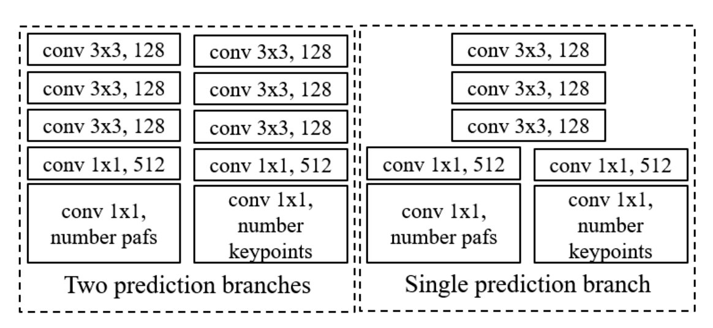
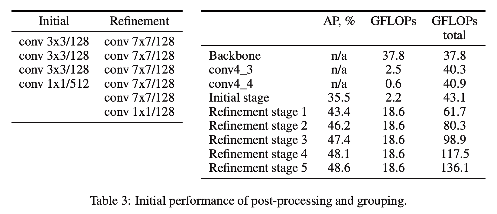

Overview:
Paper makes changes to the method in Realtime Multi-Person 2D Pose Estimation using Part Affinity Fields. Aim of the paper has been to reduce network parameters heavily, enable inference in realtime even on a CPU machine. Inference time of OpenPose is ~2.4s, while this approach yeilds ~5-10 fps (200-100ms) on web-cam feed using their python model at input resolution of 256x256.
Changes Suggested
- Uses lighter backbone, VGG16 -> MobileNetV1
- Make single branch for PAF and Heatmaps prediction
- Replace expensive 7x7 Conv's with 3x3, 1x1 and 3x3 with dilation=2 Conv blocks

New Architecture:
Results
- Good performance of 43.4% of Average Precision with only just 1 refinement stage

Comparision with other backbones:
Review
- If we reduce the network input resolution further to 128x128, gives great results !
- Without drop on accuracy on major keypoints, performs ~>10fps on a CPU